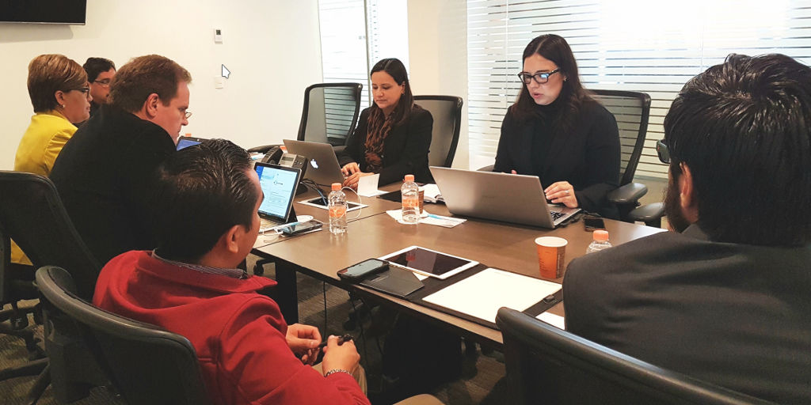
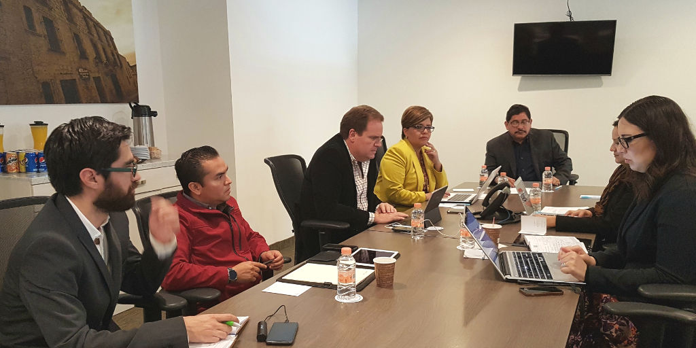

Segunda Sesión Extraordinaria de la Comisión Ejecutiva
Comisión Ejecutiva del Sistema Anticorrupción del Estado de Coahuila de Zaragoza
El día de hoy, se llevó a cabo la segunda sesión extraordinaria de la Comisión Ejecutiva en el 2018, misma que tuvo como propósito, dar seguimiento al diseño y ejecución de los objetivos estratégicos y líneas de acción planteados en el Programa de Trabajo de la propia Comisión.
La Secretaria Técnica de la Comisión Ejecutiva del Sistema Anticorrupción del Estado de Coahuila de Zaragoza, verificó la asistencia de todos los integrantes y sometió y dio fe de la aprobación del orden del día.
En uno de los puntos de la sesión, Ana Yuri Solís presentó la matriz de objetivos y líneas de acción, desagregada por temas y responsables del seguimiento, del Programa de Trabajo de la Comisión alineado al Programa de Trabajo del Comité Coordinador, misma que aprobada, lo cual permitió que los integrantes comentaran sobre el avance en el diseño de cada una de las actividades.
Como parte de los acuerdos, se estableció una organización temática para dar seguimiento a las acciones del Programa de Trabajo: la Coordinación Interinstitucional estará a cargo de la Mtra. Marcela Castañeda; Vinculación con Municipios, Juan Adolfo Von Bertrab; Capacitación y Difusión, Lourdes de Kóster; Asuntos Jurídicos, Carlos Rangel; y Ana Yuri Solís respecto de los temas de Diseño de Política Públicas y Sistema de Información. Además, se espera contar con programas parciales para ejecutar acciones y evaluar sus resultados en el corto y mediano plazos.


